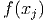
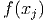

pontos
pontos
 e uma família de funções
e uma família de funções  , o
problema de ajuste de curvas consiste em encontrar uma função da família de
funções dada que melhor se ajusta aos pontos dados, não necessariamente que os
interpola.
, o
problema de ajuste de curvas consiste em encontrar uma função da família de
funções dada que melhor se ajusta aos pontos dados, não necessariamente que os
interpola.
Neste capítulo, discutimos sobre problemas de ajuste de curvas pelo método
dos mínimos quadrados. Mais precisamente, dado um conjunto de pontos
e uma família de funções , o
problema de ajuste de curvas consiste em encontrar uma função da família de
funções dada que melhor se ajusta aos pontos dados, não necessariamente que os
interpola.
Aquil, o termo “melhor se ajusta” é entendido no sentido de mínimos
quadrados, i.e. buscamos encontrar uma função  tal que
tal que  resolve o
seguinte problema de minimização
resolve o
seguinte problema de minimização
 |
ou seja,  é a função da família
é a função da família  cujo erro quadrático entre
cujo erro quadrático entre  e
e  ,
,
 , é mínimo.
, é mínimo.
Exemplo 7.0.3.
Dados o conjunto de os pontos  e a família de
retas
e a família de
retas  , podemos mostrar que
, podemos mostrar que  é a reta
que melhor aproxima os pontos dados no sentido de mínimos quadrados. Os
pontos e a reta ajustada esão esboçados na Figura 7.1.
é a reta
que melhor aproxima os pontos dados no sentido de mínimos quadrados. Os
pontos e a reta ajustada esão esboçados na Figura 7.1.
O ajuste no sentido de mínimos quadrados em minimizar a soma do quadrado
das diferenças entre a ordenadas  e o valor da função desejada
e o valor da função desejada  . Ou
seja, encontrar a função  tal que
. Ou
seja, encontrar a função  tal que
 é definido como
é definido como
 .
.
Dado um conjunto de  pontos, desejamos encontrar a reta que melhor se
ajusta a esses pontos de tal forma a minimizar o resíduo.
pontos, desejamos encontrar a reta que melhor se
ajusta a esses pontos de tal forma a minimizar o resíduo.
Ou seja, encontre a curva  tal que
tal que

O objetivo é encontrar  e geralmente temos muito mais equações do que
incógnitas, i.e.,
e geralmente temos muito mais equações do que
incógnitas, i.e.,

 .
.
O mínimo de  ocorre quando quando a derivada primeira é igual a zero:
ocorre quando quando a derivada primeira é igual a zero:


Na forma matricial obtemos
 | (7.1) |
Observe que é equivalente ao problema matricial
 | (7.2) |
Teorema 7.0.1. A matriz  é quadrada de ordem
é quadrada de ordem  e é
inversível sempre que o posto da matriz
e é
inversível sempre que o posto da matriz  é igual a número de colunas
é igual a número de colunas  .
.
Demonstração. Para provar que  é invertível precisamos mostrar que
é invertível precisamos mostrar que
 implica
implica  :
:

 com
com  , temos:
, temos:

 ,
,  , como o posto de
, como o posto de  é igual ao número de
colunas,
é igual ao número de
colunas,  . __
. __
Demonstração. Isso é facilmente provado pelo seguinte argumento:

Solução. Defina
![E = [f(x ) − y ]2 + [f(x ) − y ]2 + [f(x ) − y ]2 + [f(x ) − y ]2
q 1 1 2 2 3 3 4 4](main3136x.png)
![Eq = [f (0 ) + 0,1]2 + [f(1) − 2]2 + [f(2) − 3,7]2 + [f(3) − 7]2
2 2 2 2
= [0,1] + [a − 2] + [2a − 3,7] + [3a − 7]](main3137x.png)
Devemos encontrar o parâmetro  que minimiza o erro, portanto, calculamos:
que minimiza o erro, portanto, calculamos:
![∂Eq
∂a-- = 2 [a − 2] + 4[2a − 3,7] + 6[3a − 7] = 28a − 60,8](main3139x.png)
 que minimiza o erro é
que minimiza o erro é  .
.

Solução.
![2 2 2 2
Eq = [f(0) + 0,1] + [f (1) − 2 ] + [f (2) − 3,7] + [f (3 ) − 7]
= [a + 0,1]2 + [a + b − 2]2 + [a + 2b − 3,7]2 + [a + 3b − 7 ]2](main3145x.png)
Devemos encontrar os parâmetros 
 que minimizam o erro, por isso,
calculamos as derivadas parciais:
que minimizam o erro, por isso,
calculamos as derivadas parciais:
![∂Eq- = 2 [a + 0,1] + 2 [a + b − 2] + 2[a + 2b − 3,7] + 2[a + 3b − 7]
∂a
∂Eq-
∂b = 2 [a + b − 2] + 4 [a + 2b − 3,7] + 6[a + 3b − 7]](main3148x.png)
O erro mínimo acontece quando as derivadas são nulas, ou seja:

 e
e  . Portanto a função que
procuramos é
. Portanto a função que
procuramos é  .
. 
Dado um conjunto de  pontos, desejamos encontrar o polinômio de
grau
pontos, desejamos encontrar o polinômio de
grau  que melhor se ajusta a esses pontos de tal forma a minimizar o
resíduo, ou seja, encontrar a curva
que melhor se ajusta a esses pontos de tal forma a minimizar o
resíduo, ou seja, encontrar a curva  tal que
tal que

O objetivo é encontrar as incógnitas  que minimizam a soma do quadrado
do resíduo.
que minimizam a soma do quadrado
do resíduo.
O mínimo de  encontra-se quando a derivada primeira é igual a zero:
encontra-se quando a derivada primeira é igual a zero:


Na forma matricial obtemos
 | (7.3) |
Na forma matricial temos
 | (7.4) |
Seja  um conjunto de
um conjunto de  funções e
funções e  um conjunto
de
um conjunto
de  pontos. Procuram-se os coeficientes
pontos. Procuram-se os coeficientes  tais que a função dada
por
tais que a função dada
por

![∑n 2
R = [f(xi) − yi]
j=1](main3171x.png)
 , temos
, temos

Este problema é equivalente a resolver pelo métodos dos mínimos quadrados o seguinte sistema linear:

Solução. Desejamos encontrar os valores de  e
e  tais que a função
tais que a função
 melhor se ajusta aos pontos da tabela. Afim de usar o critério
dos mínimos quadrados, escrevemos o problema na forma matricial dada
por:
melhor se ajusta aos pontos da tabela. Afim de usar o critério
dos mínimos quadrados, escrevemos o problema na forma matricial dada
por:

Multiplicamos agora ambos os lados pela transposta:
 |
o que fornece:


A solução desse sistema é  e
e 
A tabela abaixo mostra os valores dados e os valores ajustados:
 |  |  |  |
 |  |  |  |
 |  |  |  |
 |  |  |  |
 |  |  |  |
 |  |  |  |

E 7.0.1. Encontrar a parábola  que melhor aproxima o seguinte
conjunto de dados:
que melhor aproxima o seguinte
conjunto de dados:
 |  |
 |  |
 |  |
 |  |
 |  |
 |  |
e complete a tabela:
 |  |  |  |
 |  | ||
 |  | ||
 |  | ||
 |  | ||
 |  | ||
Resposta. 
 |

E 7.0.2. Dado o seguinte conjunto de dados
 |
 que
melhor aproxima os valores dados.
que
melhor aproxima os valores dados.
 que melhor
aproxima os valores dados.
que melhor
aproxima os valores dados.
Resposta.  ,
,  ,
,  e
e  ,
,  ,
,  ,
,
 .
.


 que melhor se aproxima
dos seguintes pontos:
que melhor se aproxima
dos seguintes pontos:

 que melhor aproxima
os pontos:
que melhor aproxima
os pontos: